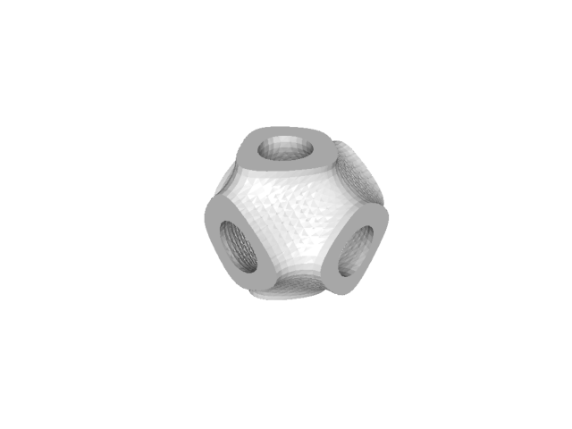

Note
Go to the end to download the full example code.
Mixed-Topology TPMS#
Mixed-topology surfaces [JM24] combine multiple implicit functions by taking weighted sums of the functions. By controlling the weights, the resulting surface can be varied continuously between the set of surfaces. Depending on the set of surfaces, this can constitute a low-parameter, topology-varying design space that can be used for design optimization (as in [JM24]).
Triply periodic minimal surfaces (TPMS) are particularly interesting subjects for a mixed-topology approach because the resultant surface will remain triply periodic (though not minimal) as long as the periodicities are compatible.
Such surfaces can be easily generated in MyMesh with the implicit
module. Several TPMSs are available as built-in functions in implicit
including gyroid(), primitive()
(Schwarz P), and diamond() (Schwarz D) [1].
from mymesh import implicit
import numpy as np
functions = [implicit.primitive, implicit.gyroid]
bounds = [0,1,0,1,0,1]
h = 0.04 # element size
weights1 = [0.25, 1]
mixed_topology1 = lambda x,y,z : np.sum([w*f(x,y,z) for w,f in zip(weights1, functions)], axis=0)
M1 = implicit.TetMesh(implicit.thickenf(mixed_topology1,1), bounds, h)
M1.plot(bgcolor='white')
weights2 = [0.5, 0.8]
mixed_topology2 = lambda x,y,z : np.sum([w*f(x,y,z) for w,f in zip(weights2, functions)], axis=0)
M2 = implicit.TetMesh(implicit.thickenf(mixed_topology2,1), bounds, h)
M2.plot(bgcolor='white')
weights3 = [0.8, 0.5]
mixed_topology3 = lambda x,y,z : np.sum([w*f(x,y,z) for w,f in zip(weights3, functions)], axis=0)
M3 = implicit.TetMesh(implicit.thickenf(mixed_topology3,1), bounds, h)
M3.plot(bgcolor='white')
weights4 = [1, 0.25]
mixed_topology4 = lambda x,y,z : np.sum([w*f(x,y,z) for w,f in zip(weights4, functions)], axis=0)
M4 = implicit.TetMesh(implicit.thickenf(mixed_topology4,1), bounds, h)
M4.plot(bgcolor='white')
- 
RFBOutputContext()
RFBOutputContext()
RFBOutputContext()
RFBOutputContext()
Total running time of the script: (0 minutes 5.981 seconds)